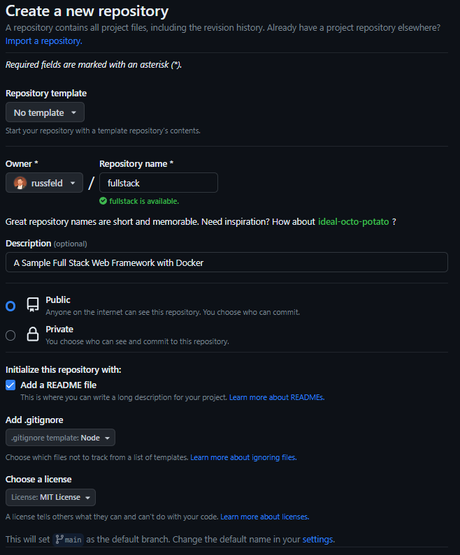
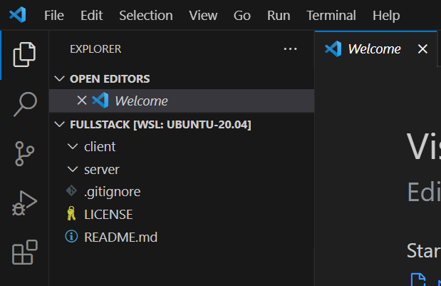

Create Repository
Start by creating a new GitHub repository. We’ll let it initialize the repository using a README file, and also select the .gitignore file for a Node project.

If you’ve already created the repository, you can get the .gitignore file for Node projects from GitHub’s
gitignore repository
Check out Repository
Next, check out the repository:
# Terminal
git clone git@github.com:russfeld/fullstack.git
cd fullstack
code .
Tip
Change the repository URL to match your repository!
This should open the repository in Visual Studio Code.
Create the File Structure
Create the following folders within your project:
clientserver
These folders will store the frontend and backend applications, respectively.
At this point, you should have the following structure:

Note
If you aren’t using GitHub, you can simply create the directory structure shown above manually or modify your existing project to match.